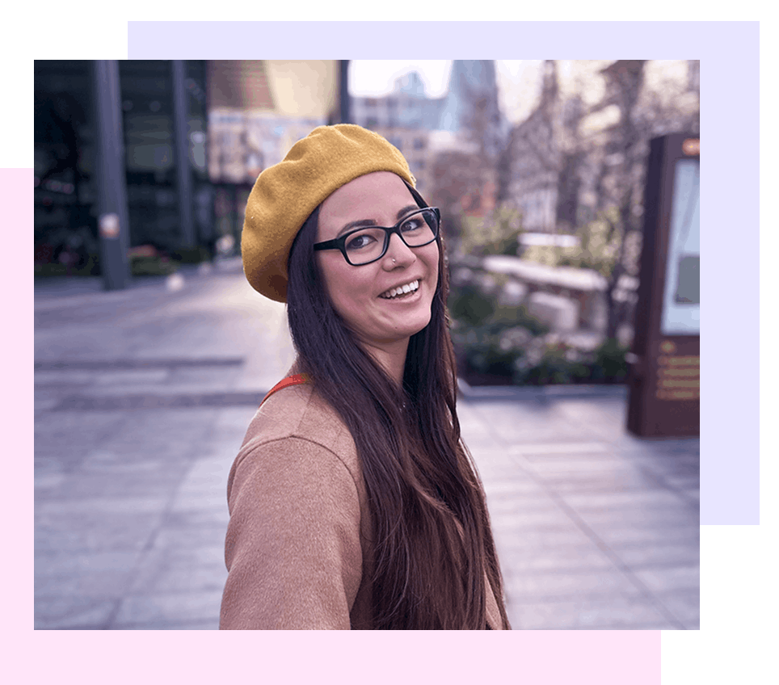

My passion lies in UI/UX. I love creating digital products that are accessible, practical and scalable and believe that accessible design is the gateway to a better world for everyone. My knowledge in UX best practices paired with a good foundational knowledge in HTML, CSS and JavaScript allows me to approach digital product design holistically.
Companies I have worked for include Volume Up Digital (pharmaceutical marketing agency) and Flickr Foundation (non-profit archival institution) where I’ve designed and created digital materials including websites, digital products, e-learning materials, email templates, slide decks, PDF documents etc.
Before becoming a designer, I was a chef. One of my favourite aspects of that role, beyond my love of food, was creating experiences that delighted people. While UI/UX is a very different field, my passion for improving experiences and crafting moments of delight for users remains the same.